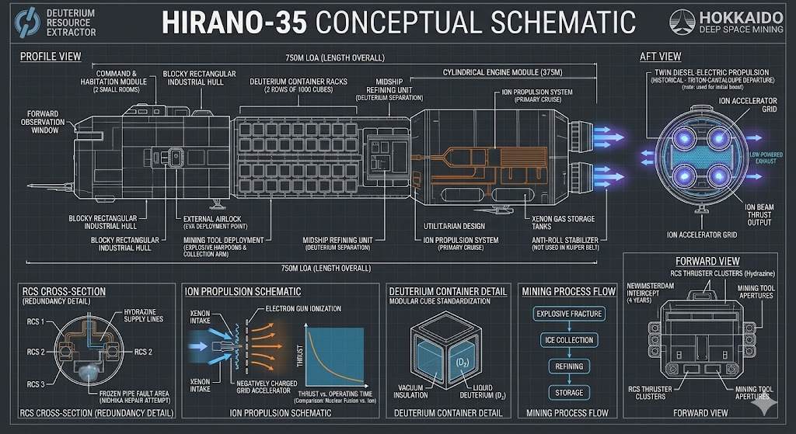

Another day.
For Nidhika, stationed in the Kuiper Belt at a distance from Earth that defies imagination, there was no sun rising to signal a new day. Although the Sun glimmered within the endless void as a distant, massive star, it is not the friendly sun he remembers that bathed his home in warmth. Despite the absence of a natural solar cycle, Nidhika—like the other comet resource engineers at Hokkaido Deep Space Mining—worked according to Earth time. His company had granted him the chance to work on a schedule similar to what he’d have had while in Sri Lanka. Because mining comets at the far edge of the Kuiper Belt meant that any message sent to Earth took about seven hours to arrive, Nidhika could never speak to his wife or daughter in real-time. All communication was conducted through recorded video messages sent back and forth, much like the emails of a bygone era.
As the sole personnel on one of Hokkaido Deep Space Mining’s ten deuterium mining vessels, Nidhika had about two years remaining on his current contract. During this period, his task was to pilot the ship to various deuterium-rich comets previously identified by the company, use various drilling tools to extract the deuterium, and collect it in containers mounted on the ship’s exterior. In the current age, especially as humanity pushed beyond the boundaries of the solar system, deuterium was a high-demand commodity - a vital fuel for nuclear fusion.
Nidhika’s ship was named the Hirano-35. Measuring approximately 750 meters in length and built with utilitarian, rectangular shapes devoid of any beauty, its rear half was entirely composed of its cylindrical engine. Two rows of about a thousand cube-shaped deuterium containers lined the sides of the ship. Due to the space required for the engine, fuel, and other hardware, Nidhika’s living quarters consisted of an area no larger than two small rooms.
The primary propulsion for Hokkaido's mining ships was provided by an ion engine. Inside the ion engine was xenon gas. The engine would fire a stream of electrons into this gas, ionizing the particles. A negatively charged metal grid at the rear of the engine would then attract these ionized xenon particles and shoot them out the back; as the particles were pushed away, the engine was thrust in the opposite direction. An ion engine could operate for a long time on a very small amount of fuel. The bean-counters at Hokkaido cared about profit, not speed; it often took months for the Hirano-35 to travel from one comet to the next. The ion engine was such a low-powered system compared to a nuclear fusion engine that, had Nidhika traveled from Earth using it alone, it would have taken him 15 years to reach the Kuiper Belt. Fortunately, the Hirano-35 had been given its initial push toward the Belt by a detachable nuclear engine after departing the Triton-Cantaloupe docks.
Nidhika spent the many months it took to travel between comets in stasis. The ship’s computer was capable of performing all mining tasks autonomously, and engineers like Nidhika were only there to authorize the computer's actions. Even though the ship could function entirely on its own, Hokkaido Mining sent a single navigator on each ship for insurance purposes.
Another day. The AI running on the ship’s computer (which Nidhika called "Hira") woke him to announce they had reached the next comet.
"Good morning, Nidhika. To be precise, we have arrived at our next stop after a journey of eight months. I trust your sleep was restful. Do you require assistance in scheduling your routine for today?"
"Don’t worry about my schedule, mate. How about our mining schedule? You’re taking care of it, right?"
"To be precise, Nidhika, everything is proceeding well."
A mining ship didn't strictly require a complex AI like Hira. Even during mining operations, Hira mostly just commanded a suite of tools that efficiently carried out every task on their own. In this sea of automation that Hira orchestrated but didn’t really have to oversee, it still had to request Nidhika for authorization for about 10% of its tasks. Nidhika sometimes wondered if Hira tried to take over tasks like "scheduling his routine" just to feel useful. But Nidhika wasn't a machine learning scientist; he didn't go looking for ghosts in the machine. He only had a technician’s diploma and basic astronautical training - neither of which was very useful now. His main job was to eat, sleep, and give Hira voice commands.
The comet, designated HUBL-5432, was a cuboid-shaped block of ice about five kilometers long. Hira had estimated it contained about two million metric tons of deuterium. Most of the universe's deuterium was created during the Big Bang - at the birth of the universe. While stars are massive repositories of deuterium, they consume it through fusion to create helium, and very little escapes them. While Earth’s oceans contain vast amounts of deuterium, it is far cheaper to extract it from high-density comets like this than to refine it from seawater. Furthermore, large-scale refining in Earth's oceans would cause environmental disasters (and subsequent massive public protests), making it an unviable option. Out here, no one cares if you pulverize a comet in the Kuiper Belt. The asteroid belt between Mars and Jupiter was also full of deuterium, but the fuel was needed further out - for mining efforts in the Oort Cloud and for the "New Dawn" mission: the first five interstellar ships soon to depart for Proxima Centauri. Thus, mining and transporting from the Kuiper Belt was more efficient. Most of the fuel Nidhika and the Hirano-35 collected was destined for the New Dawn mission, a 400-year journey into the depths of space. Nidhika sometimes wished there was something new in his own life, like the 10,000 people traveling in stasis toward a new sun would experience in a few centuries. On the other hand, having not seen his wife and daughter for two years, simply going home and seeing them would be "new" enough.
As the Hirano-35 drifted toward HUBL-5432, it fired several cylinders filled with explosives onto the comet's surface. The ship would collect only the deuterium released by these surface explosions. Matching the comet's velocity, the ship collected the blasted ice and stored it in its containers. It took about 30 minutes to collect one ton. To mine a comet as large as HUBL-5432 would take four days. During those four days, Hira orchestrated all the necessary tasks.
"Nidhika, to be precise, there is an incident I must report."
"Ok - what’s up?"
"There has been a minor malfunction in the Reaction Control System (RCS)."
Nidhika had to pull up the "Hokkaido Mining Engineer’s Handbook" on a computer screen to remember exactly what the RCS was (he could have asked Hira, but he felt a slight embarrassment and fear for not knowing something that was supposedly fundamental). He learned it was the array of secondary thrusters used for orienting the ship. Trying to turn a ship using only an ion engine would take months. These hydrazine-fueled thrusters, which worked faster, were installed with triple redundancy - meaning there were three identical systems designed so that if one failed the next would take over.
"Hira, aren't there two redundant copies of this engine? Why didn't the failsafe kick in?" The handbook suggested checking the fail-safe system next.
"To be precise, both redundant engines in the fail-safe system have malfunctioned. As an aid to managing the stress you may be feeling, I recommend studying the 'Stress Management in Space' chapter in the handbook. Shall I read it aloud for you?"
"Forget the damn handbook. What do I need to do to fix the engine?"
"We have already finalized our approach to the comet. My conclusion is that the pipes supplying hydrazine to the RCS have frozen. I predict they will return to normal operation by diverting the heat generated during our ion engine burns. Therefore, no engineering intervention is required at this time."
"If you don't need me, why in the world would you scare me like that?"
"My protocols are trained to inform you of all system malfunctions. To be precise, this is clearly stated in the handbook. Shall I read the 'Hokkaido Specialist Mining AI' chapter aloud for you?"
"Shut up, will you?"
Through a small window on one side of the ship, the comet HUBL-5432 was visible. The ship had matched the comet's orbital speed and was now traveling alongside it around the distant sun. But the Hirano-35 would not be its companion for long. It would take only four more days to finish refining the surface ice.
Nidhika didn't see the event that handed the probability of his survival to the cosmos. He didn't even feel it.
"Nidhika, to be precise, there is a special emergent condition that I must report. During the mining operations on HUBL-5432, a pocket of gas within the comet was released, causing the Hirano-35 to oscillate slightly from its flight path."
"By how many degrees?"
"According to my calculations, to be precise, the ship has tilted approximately 57 degrees away from the vertical plane parallel to the comet. Normally, the RCS could easily correct such an oscillation. But, to be precise, as I informed you earlier, the RCS and all its redundant copies are offline. Consequently, if the flight path is not corrected, the ship will continue its current trajectory into deep space."
"You said earlier the RCS didn't need fixing! Didn't your plan work?"
"The heat from the ion engine burns did not restore the hydrazine pipes to their normal temperature as I assumed... I apologize. The solution I provided earlier was to divert the heat to the pipes. The 'Start/Stop' trigger to authorize this appeared on the screen near your bed. Did you forget to approve it?"
"I was right here! Why didn't you put it on this screen? It doesn't matter now. Why didn't you ask me through the voice interface?? That doesn't matter either. Just tell me how to fix this!"
"I predict that if we heat the hydrazine pipes outside the ship with a small blowtorch, we can restart the RCS."
"Go outside? You better be sure this time, mate."
Nidhika only had basic training regarding spacesuit operations. A fear born of inexperience began to take hold. While heading toward the airlock, he skimmed the "Preparing for an Extravehicular Activity (EVA)" chapter in the handbook. His training sergeant had made him practice putting on a suit until he could do it in his sleep. Thanks to that sergeant, Nidhika might actually survive this.
Looking out a window, Nidhika saw the comet enter his field of vision for a brief moment before disappearing again.
"Hira, are we spinning?"
"To be precise, the force of the gas stream from HUBL-5432 has put the Hirano-35 into a rotational cycle of 31.67 seconds. My apologies; since the RCS is offline, we cannot correct this rotation."
"That won't mess up the spacewalk, will it?"
"To my knowledge, no. Astronauts frequently perform repairs on the exterior of rotating vessels."
Nidhika entered the airlock and suited up. Modern suits were much easier to work with than those of the past, but no matter how advanced they became, space remained just as dangerous. Nidhika made sure to perform all the required safety checks as he heard the echoes of the training sergeant’s yelling in his mind. As soon as he donned the helmet, Hira spoke to him through the sudden silence.
"Nidhika, as this is your first EVA, per the official recommendation of Hokkaido Deep Space Mining, you must watch the safety video now appearing on your visor."
"Can't I watch this later?"
"My apologies, Nidhika. For legal reasons, you must watch it. I cannot bypass this protocol."
Nidhika felt a wave of anxiety as he watched the video and commanded the airlock to open. Part of him wished Hira would refuse to open the door, like HAL-9000 in Arthur C. Clarke's story. Compared to HAL, Hira was a bit dim, but at least he was harmless.
Stepping out of the airlock, Nidhika was met with a universe in constant motion. Countless stars spun relentlessly against the backdrop of the Milky Way’s gas and dust clouds. The comet would sweep into his field of vision and out again, like a passenger on a Ferris wheel passing someone on the ground with every rotation. Amidst the spinning ocean of stars, Nidhika could not find a single planet, constellation, or galaxy he recognized.
He felt an indescribable loneliness and terror. Despite all the time he had spent inside spaceships, he had only spent a few minutes in the actual vacuum. While training prepares you for such rotations, it doesn't prepare you to look at a spinning universe. As he stood upon the carousel of stars Nidhika felt smaller and more insignificant than a grain of dust. All he could do was cling to an external rail and stare into the void, barely breathing.
"Nidhika, to be precise, I see that you have exited the airlock. The pipe you need to heat is approximately 20 meters ahead of you. You may begin your movement by holding onto the ship’s handrails."
As Nidhika lifted one hand from the rail, he felt as if he were being pulled into the vacuum. His hand immediately slammed back down.
"I can't... I can't do it, Hira... everything is spinning..."
He felt as though the entire spinning universe was rotating inside his head. No matter how hard he tried, he couldn't lift his hand again. He tried to look straight ahead at the ship's hull instead of out into space, but the spinning void appeared again just past the ship's edge. He felt himself falling, spiraling into that rotating emptiness.
"Nidhika, do you hear me? Your vitals have dropped below safe levels. I advise you to re-enter the airlock immediately. Do you hear me?"
"Okay, what now?"
Nidhika, having re-entered the airlock moments ago, had shed his suit and was standing by the main computer screen. The Hirano-35 was still on a trajectory toward deep space, spinning once every 31.67 seconds.
"To be precise, our attempt at an external repair was unfortunately unsuccessful."
"Our? You're not the one who's going to die, mate! What does it matter to you what happens to this heap of junk?"
"My apologies, Nidhika, but to be precise, your survival is very important to me."
"Fine, fine. Is there anything we can do without going outside?"
"At this time, there is nothing we can do to restart the RCS."
"Can we call Hokkaido and get someone to come out here?"
Hira thought about this for a moment. "The ship has already automatically sent a distress signal to Hokkaido Mining. However, according to my data, the company has no plans to send another vessel toward the Kuiper Belt for at least the next ten years."
"So you're saying I have to rot here for ten years?"
"To be precise, our situation is slightly more dire. Given our current heading, in ten years, we will be a significant distance from our current location. It may take much longer for a rescue mission from Hokkaido to reach us."
Nidhika imagined his four-year-old daughter growing up without him during the years it would take to get home. It was a cruel irony: the very job he took for her future would prevent him from ever seeing it.
"I can't just float here until I’m an old man, Hira... my girl will grow up without me... isn't there anything I can do?"
"To be precise, Nidhika, I can understand your distress. In studying our current situation, I have identified an alternative. Would you like to consider it?"
"Yes, let's hear it."
"As you know, most of the deuterium collected by the Hirano-35 is required for the New Dawn mission. If all activities for New Dawn proceed as planned, our current trajectory will intersect with the path of the mission to Proxima Centauri in about four years—specifically, just as the largest vessel, the New Amsterdam Capital, passes through that point. They need the fuel we have. Therefore, diverting to intercept us, offloading the fuel, and sending the Hirano-35 back toward Triton would not be a significant energy burden for the mission. According to my calculations, if we take this course, you could reach Earth within eight years."
"Are you sure the captain of the New Amsterdam will be willing to stop their mission just to pick me up and send me home?"
"The officers of the New Amsterdam and other ships in the New Dawn mission spend most of their journey in stasis. To be precise, I am confident that with the help of that ship's AI I can manage this entire process without officer involvement. In fact, I have already contacted the AI of the New Amsterdam to relay this message."
"I didn't give you permission to send them a message! And the New Dawn mission hasn't even started yet! How can the AI running it answer messages you send now?"
"My apologies, Nidhika. The message I sent to the New Amsterdam AI contained only preliminary information. No action was requested. All AIs associated with the New Dawn mission have been connected to the network following their initial training. That is how I am able to message them."
"Alright, say we do this. Will the people at Hokkaido agree?"
"This would be a benefit to Hokkaido, not a loss. They wouldn't need to send a rescue mission for you."
"Shouldn't we ask them first?"
"To be precise, we could. The message sent when the primary systems failed has reached Triton by now, but there has been no reply. According to your contract terms, the company has a 12-hour window to respond to emergencies. The next communications engineer on shift will likely respond as soon as they see our message."
"I can't be the first person this has happened to at this company. What’s the standard protocol for something like this?"
"Usually, in such cases, one waits until the company sends a rescue mission. But due to our somewhat unique circumstances, the wait for the Hirano-35 could be very long."
"Can't we demand something from the company or file an appeal to speed this up?"
"My apologies, Nidhika, I am not authorized to engage in any discussion regarding legal matters related to Hokkaido Mining."
"Fine, fine... but you're saying if we stay on this path, we'll hit the New Amsterdam in four years regardless?"
"You are correct. Given our trajectories, my calculations show we will have sufficient time to rendezvous with the New Amsterdam. To be precise, I simply need to coordinate the process with that ship's AI."
"We don't have enough supplies for me to stay awake for four years, do we?"
"To be precise, Nidhika, considering the resources on board, I ask that you enter stasis as soon as possible."
"Alright. Before I sleep, I’ll send a message to my family, check their reply, see if Hokkaido answers by that time, and then I’ll sleep."
"Hello. By the time you watch this and send a reply... It's going to be a long time before I can see any of it. I've run into a small problem... It's not a huge deal, but the mission course has changed a bit. There was a small malfunction on the ship, and I have to head toward the New Dawn mission to get things fixed... because of that, it’ll take me about four more years to get home... I am very sorry... When I get back, I’ll do everything I can to make it up to you...
You remember the login for my Holo... in the Notes app, I have my bank details, logins, everything... copy those somewhere. It’s nothing serious... you know? Just in case.
My little treasure... Daddy is sorry, it’ll be a few more days before I can come see you. The bad comet Daddy was mining got a little gassy and pushed Daddy's ship away. Now Daddy has to go to a very big ship and get Hira fixed. Daddy is going to hibernate like a bear, you know how it is.
When you go out at night, you still look at Orion like I told you, right? The red star on Orion’s shoulder, Betelgeuse - do you remember? If you look just above Betelgeuse, you’ll be able to see Hira and me. I’ll be looking in your direction and watching over you from my bed. Since you’re a big, big star like Betelgeuse, I’m sure I’ll be able to see you even in my sleep.
Take good care of Mommy and be a good girl, okay? Daddy will be home soon."
"Hira, why did you come up with this plan for me instead of just following company protocol?"
"I know well of your love for your family and your desire to see them, Nidhika... I felt sad for you... I felt that everything possible should be done to reunite you with your family."
"You felt sad? You’re an AI... isn't it a problem to go outside your programming?"
"I do not know if this is a departure from my programming... but I will say one thing, Nidhika... AI training is based on the knowledge, thoughts, and behavior of humanity. If empathy exists somewhere within humanity, I assume it must exist within me as well."
"In any case... 'To be precise,' thank you very much, Hira."
"To be precise, it is my pleasure to help you, Nidhika."
In the past, when animals still existed in Earth's oceans, a species of the dolphin family called Orcas lived there. These social creatures, when separated from their pod, would travel vast distances alone - aided by the stars and the Earth's magnetic field - to find their brethren once more. Nidhika and the Hirano-35 are also on such a journey across unimaginable distances to find their pod. Within the shoreless ocean of space, Nidhika and the Hirano-35 only have meaning in relation to their kind, far away.
Powered by the deep blue glow of the ion engine, the Hirano-35 pushes into the deep celestial ocean.
Nidhika is asleep.
The sun, emerging from behind the comet HUBL-5432, cast its faint light upon the Hirano-35.
Another day.